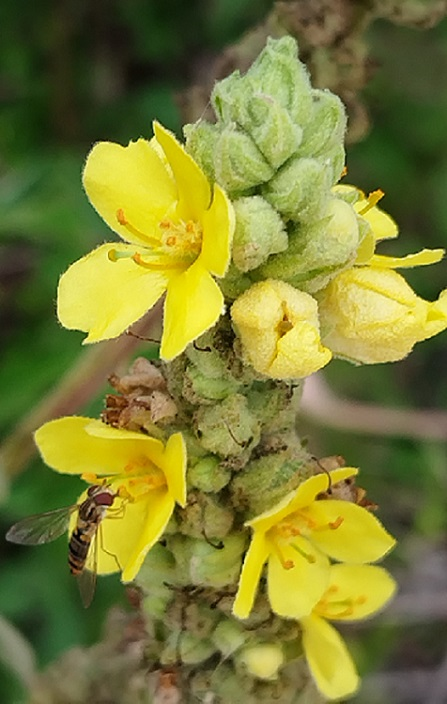
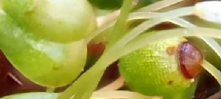

https://fleursauvageyonne.github.io/ |
|||||||||||||||||||
 et d'ailleurs | |||||||||||||||||||

|
|||||||||||||||||||
| Un petit herbier virtuel de botanistes amateurs plein de curiositas, ce désir de connaître devenu comme anachronique avec la "moderne différenciation des sciences". | |||||||||||||||||||
| Imaginé par Claude Richard pour s'initier à la Botanique dans l'Yonne sur les terres du premier inventaire floristique français, c'est désormais ailleurs également, aussi bien dans l'espace que dans le temps, que certaines de ses découvertes diverses et variées s'offrent à vous, mais pas toutes. | |||||||||||||||||||
| Des fleurs sauvages qui cachent des racines, des aiguillons, des tiges, des feuilles... présentées sous la forme de "fiches" ► classées, dans leur famille, selon leur couleur approximative lorsqu'il s'agit de fleurs colorées Cliquer sur une couleur en zoomant si besoin proposées sous différents angles et par leurs Noms latins et français ► |
| Des fleurs sauvages et des insectes |
| AbeillesPapillonsInsectes anthophiles |
| Verbascum thapsus L., 1753 Molène bouillon-blanc, herbe-de-saint-Fiacre, bouillon-blanc Une Scrophulariacée visitée par un syrphe  Cravant, 24 juillet 2023 |
| Des fleurs sauvages et des végétaux sans fleurs mais à spores |
| Mousses Funaria hygrometrica Hedw., 1801 |
|  Photo © Jean Ygnard |
| Hépatiques Metzgeria furcata (L.) Corda, 1829 |
| Ophioglosses, prêles, fougères |
| Lichens Ramalina fraxinea (L.) Ach., 1810 même si les lichens ne sont pas des plantes. Symbioses d'algues microscopiques ou de cyanobactéries et de champignons, ils font partie intégrante de la Mycologie. |
| Bienvenue ► Welcome / Bienvenidos / Välkommen добро пожаловать / مَرْحَبا いらっしゃいませ / 欢迎 |
| ► ► |
| Conception/maintenance informatiques : Annick Jani Mise à jour : JUILLET 2023 |